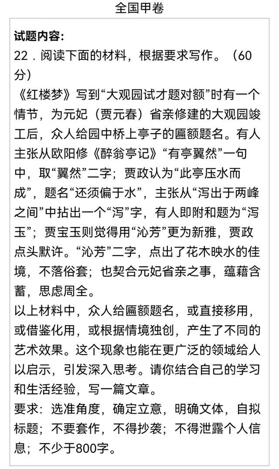
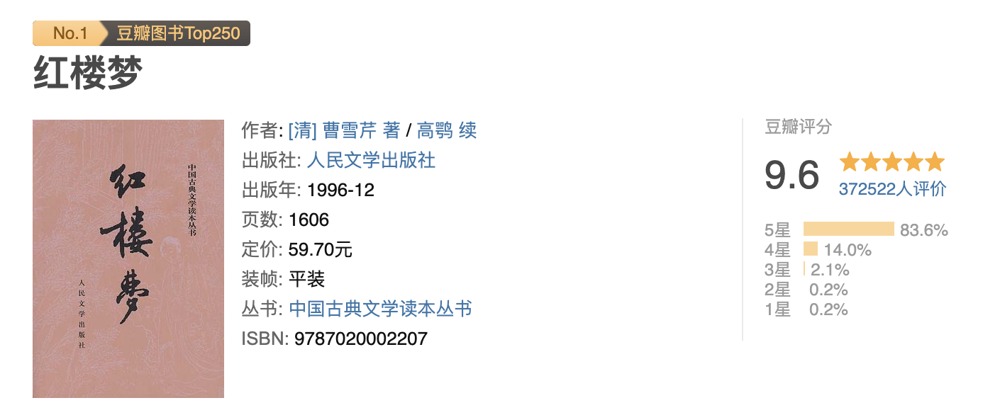

这篇小记写于早上上班的地铁上，我之前都是正襟危坐在电脑旁用 Obsidian 写，你这次尝试在手机上用 Drafts 写，然后到公司后再用电脑做些调整、配上图片后发表。
上上个周末去了一趟大观园，也算圆了我这几年的一个愿望，其实大观园离我住的地方并不远，开车也就 15 分钟，只是由于疫情再加上自己的行动力不足一直拖到现在。
行动力不足的一个原因是大观园 40 每人的票价比其他公园高出很多。可是虽然贵，但它又包含在了公园通票中，所以我去年的时候就想今年办个通票，到时候去个痛快，然后一晃半年多就过去了。这次让我行动的一个触发点是前几天高考的作文题目中出现了大观园，又唤起了我去大观园的念头，刚好疫情也没那么紧张，索性就来了。

下图是我拍摄的作文题目中出现的「沁芳」：

实话实说，大观园没有我想想的那么大、那么宏伟奢华，可能也是因为当初的成本和地基大小所限，毕竟当时的建园最主要的目的是拍摄红楼梦电视剧，那些宏伟的场景可以通过镜头的运用来突显。气势上虽然没达到我的预期，但里边的景色还是极好的，待到冬天下雪后我会再来二刷。因为姓氏的缘故，我在逛大观园时总会幻想在逛自己家的园子。
当时大观园建在北京郊区，谁成想当年的郊区现在已经成了北京的核心地段。
因为先前读过几遍红楼梦，所以看到每一处景观都能回想起书中在这里发生过的故事，比如看到花冢，就会想到黛玉的葬花词：「侬今葬花人笑痴，他年葬侬知是谁？」

看到省亲别墅，想到元妃说的那句「当日既送我到那不得见人的去处，好容易今日回家娘儿们一会，不说说笑笑，反倒哭起来。」

看到写着顾恩思义的祠堂，想到中秋节时祠堂内传出的几声叹息，暗示着贾家的败落。

看到潇湘馆和怡红院想到宝黛两个小冤家在这里或喜或悲或叹或惊的那些场景。


我小时候并没有看过红楼梦，甚至没看过他的相关影视作品，著名桥段也只听说过刘姥姥进大观园。在我的思维定势中红楼梦是一本讲儿女情长的小说，前几年读它的原因是随着阅读量越来越大，读到的对这本书引用的内容也越来越多，而且红楼梦在豆瓣上稳坐头把交椅，我就越来越对这本书产生好奇。

书一开始讲大荒山一块石头的故事，我差点弃读，但是往后读了读发现又讲到女娲补天，石头是最后没有使用的那一块，石头有思想后想去人间走一遭，跛足道人和癞头和尚答应带它去看一看这个繁杂的人世间，顺便让它看着了却几段姻缘，于是我遍产生了兴趣。
红楼梦中作者要表达的并不是那几对小情侣或者三角恋之间的恩怨情仇，而且讲了一个美好的青春王国的故事，这个王国的结束于在抄检大观园。每每读到大观园中宝玉与姐妹们嬉笑玩乐的情结，我也会回忆我自己的童年时光。作者在书中表达了对所有人和事的怜悯，作者从来不觉得一个人恶，没有批评书中的任何角色，而且书中很多为人处世之道挪到现在的职场和官场也非常适用。
《红楼梦》还有一个特点：它是一本关于女孩子的书。在《红楼梦》中，贾宝玉在某种程度上都被女性化了，这在中国的经典著作中很少见。男生若要读懂女生的心思，不妨读读它。